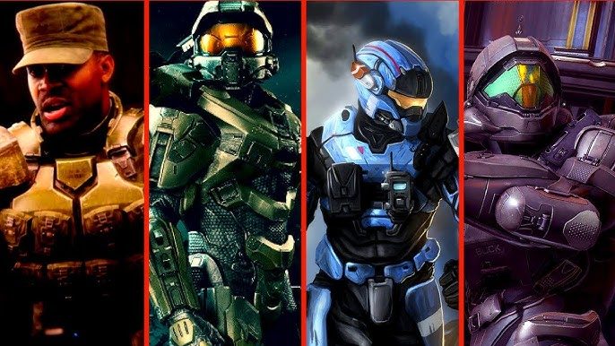
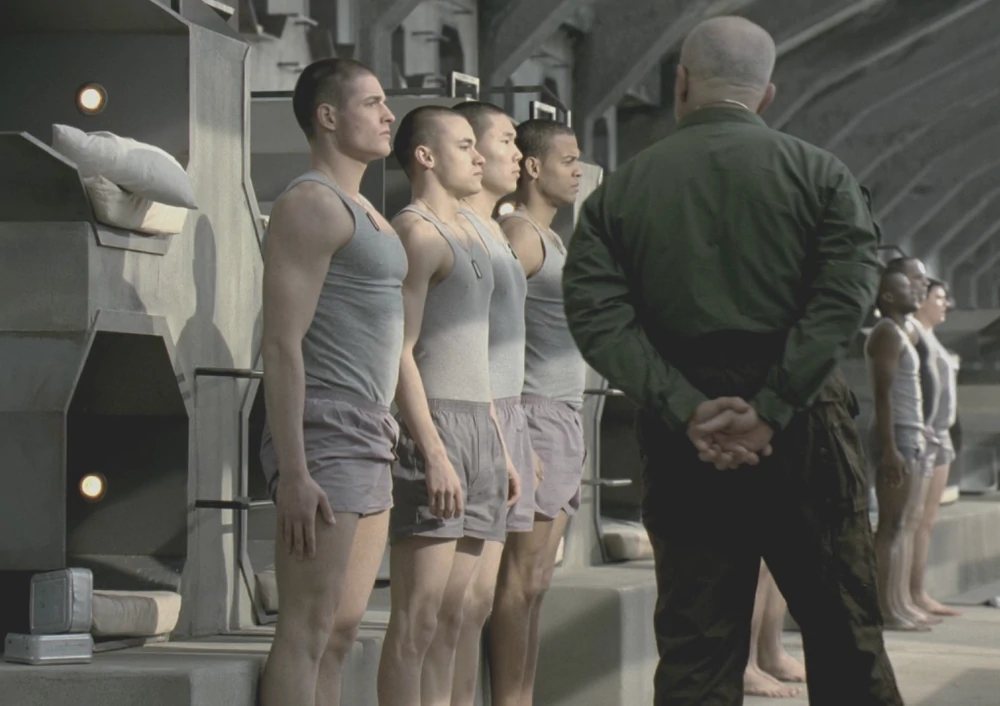
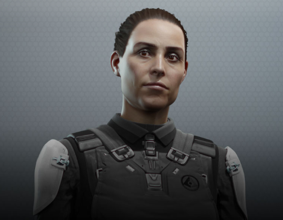

Warning: This document is sealed under ONI Directive Alpha OMEGA.
Accessing this file without proper clearence is punishible by
death as per directive J-516
Mission Statement
The SPARTAN-II Program, originally known as the ORION Project
Generation II, was part of the SPARTAN Program, an effort to produce
elite soldiers through mechanical and biological augmentation.
The SPARTAN-II program would be the first in the series to meld
advanced exoskeleton technology with the soldiers' superior physiques.

Spartan Variants
There are four variants of Spartans. Each variant was seen as an upgrade to previous iterations.
For instance the Orion's are considered the SPARTAN I class but they
lacked both the advanced MJONIR armor and the physical and mental augmentations that became
standard for later Spartan variants. Save for the controversial Spartan III's
variant which saw the deployment of the youngest soldiers in UNSC history. Spartan
II's
are regarded as the most effective class of Spartan. The legendary Master Chief; John 117 is among the first
class of the Spartan II's. Lastly are the Spartan IV's. Less effective than II's
but they are greater in number and armed with the most advanced MJONIR armor.

Spartan Training
Orion and Spartan IV classes were made up of volunteers from UNSC Special Forces.
The SPARTAN-II candidates, after being abducted and sedated, were taken
to the colony world Reach, and began their training under Chief Petty
Officer Mendez. The SPARTANs endured a great deal of hardship during
their first years of training: they were placed into situations and
drills that pushed their abilities to their very limit and beyond.
Their hard training was complemented with high-level education, which
included mathematics, science, physics, reading, writing, and military
tactics

Commander-in-Chief of the Office of Naval Intelligence (CINCONI)
The primary head of ONI is the Commander-in-Chief of the Office of Naval
Intelligence (CINCONI). Osman, a former SPARTAN-II herself, currently possesses
near-complete operational control over ONI and through it much of the UNSC.
Although ONI employs a number of security councils and numerous checks and balances
within the organization proper, the CINCONI maintains the greatest singular power
within ONI and, in many respects, the entirety of human governance.